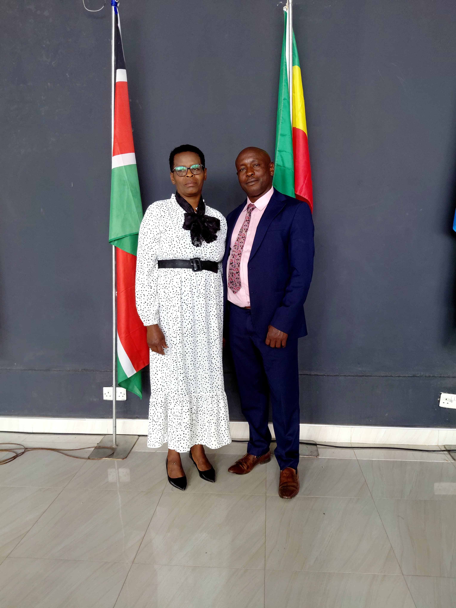

GracePath Network is led by dedicated servants of Christ who are committed to biblical teaching, discipleship, prayer, evangelism, and community transformation.
Our leadership seeks to serve with integrity, humility, and faithfulness to God's calling.

Founder & Director, GracePath Network
David Ngure serves as the Founder and Director of GracePath Network. He is passionate about preaching the Gospel, developing disciples, equipping Christian leaders, strengthening families, and advancing God's Kingdom through biblical teaching and practical ministry.
His vision is to see believers grow in spiritual maturity, discover their God-given purpose, and impact their communities for Christ.
Developing believers through biblical teaching, discipleship classes, and leadership training.
Encouraging spiritual growth through prayer, intercession, and pastoral support.
Sharing the Gospel and serving communities through outreach initiatives.
Supporting families through biblical teaching, counseling, and encouragement.
Mentoring young people to become committed followers of Jesus Christ.
Producing and distributing Christian teaching materials and discipleship resources.
Jesus Christ remains the foundation and model of our leadership.
Every ministry decision is guided by Scripture.
We lead by serving others with humility and love.
We strive to demonstrate honesty, accountability, and faithful stewardship.
"Whoever wants to become great among you must be your servant, and whoever wants to be first must be slave of all."
Mark 10:43-44
For counseling, prayer, ministry inquiries, or leadership appointments, please contact us.
📞 +254721335631
📧 gracepathnetwork@gmail.com
📍 Naishi, Njoro, Kenya